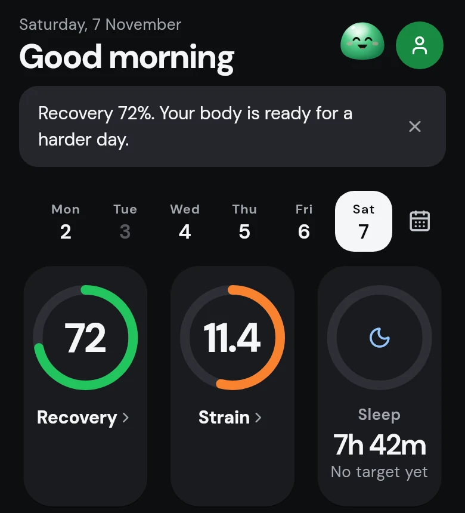

静止しているときだけ測るストレス
5 分間の静止区間から 0–100 のストレスを算出し、夜間の心拍変動と比較します。動いている時間は評価せず空白のままにします。

ProjectFit は WHOOP バンドと Garmin ウォッチに Bluetooth で接続し、リカバリー、ストレイン、睡眠、ストレス、Body Battery をスマホ本体で計算します。アカウントもサーバーもサブスクリプションも不要です。
iPhone と Android · オープンソース (AGPL-3.0)

機能
すべての数値は公開された手法で計算し、定数も公開しています。データがまだ足りないときは、推測せずにそう表示します。
5 分間の静止区間から 0–100 のストレスを算出し、夜間の心拍変動と比較します。動いている時間は評価せず空白のままにします。
睡眠と穏やかな休息で充電され、活動とストレスで消費されます。すべての変化率を公開しているので、なぜ動いたのかがわかります。

あなた自身の必要睡眠時間に対する睡眠時間、睡眠ステージ、覚醒時間、寝返り、夜間のストレスを、それぞれの重みとともに表示します。

HUNT 研究のモデル（年齢、ウエスト、安静時心拍数、運動習慣）で日々の習慣から VO₂max を推定し、その平均に当たる年齢を示します。

WHO の目標 150 分に対する週ごとの中強度・高強度の分数と、4 週間のトレーニングを低強度有酸素・高強度有酸素・無酸素に分けた内訳。

2 分間静かに座るだけで、心拍数、HRV、呼吸数、ストレスを 1 件の記録として保存します。

プライバシー
ProjectFit のアカウントもサーバーもありません。バンドは Bluetooth でアプリと直接つながります。
すべての指標はバンドの生データからスマホ上で計算されます。オフラインでも使えます。
登録は不要です。バックアップは暗号化され、あなたが選んだ場所に保存されます。
すべてのコードを AGPL-3.0 で GitHub に公開しているので、誰でも中身を確認できます。
インストール
ProjectFit はまだ App Store にも Play Store にもありません。GitHub のリリースからインストールしてください（手順書は英語またはインドネシア語です）。
iOS 15 以降 · 無料の Apple ID
Android 8.0 以降